Почему в исследованиях не работает подход «просто спросить ИИ»
- Ошибки накапливаются. Если каждый шаг верен на 90%, то пять шагов подряд верны лишь в 59% случаев.
- Правдоподобно — не значит проверено. Языковая модель пишет уверенный текст. Без жёсткого правила факты, заявления компаний и догадки перемешиваются.
- Результат не воспроизводится. Ответ из чата нельзя повторить в следующем квартале с той же структурой и той же планкой качества.
Устройство
Каждой части — та работа, которая ей удаётся лучше всего. ИИ решает и пишет: какие конкуренты важны, что означают данные. Код выполняет: загружает сайты, проверяет ссылки на источники, объединяет данные, строит графики и верстает PDF. Человек даёт одобрение в четырёх фиксированных контрольных точках.


Что проверяет валидатор
- Каждое поле соответствует JSON Schema, у каждого утверждения есть хотя бы один идентификатор источника.
- Каждый указанный идентификатор существует, у него есть ссылка и дата обращения.
- В реальном запуске нет текста-заглушки и ссылок-примеров.
- Нет запрещённых названий.
- Нет битых ссылок. Страницы, которые блокируют ботов, помечаются для ручной проверки.
ИИ получает правила. Следит за их соблюдением код.
Первый запуск
Анализ конкурентов и рынка для компании из сегмента A2P SMS. Девять исследовательских агентов работали одновременно, по одному на конкурента, ещё 30 компаний вошли в обзорную таблицу. Перед началом исследования около 50 утверждений из старых внутренних документов сверили с актуальными источниками, и 15 из них исправили или убрали. Эти исправления внесли ещё до того, как была написана первая новая страница.
Что бы я сделал иначе
Считал бы источники и утверждения одним инструментом. В исследовательских файлах и в итоговом отчёте подсчёт немного расходился (192 и 189 источников), поэтому на этой странице цифры округлены.